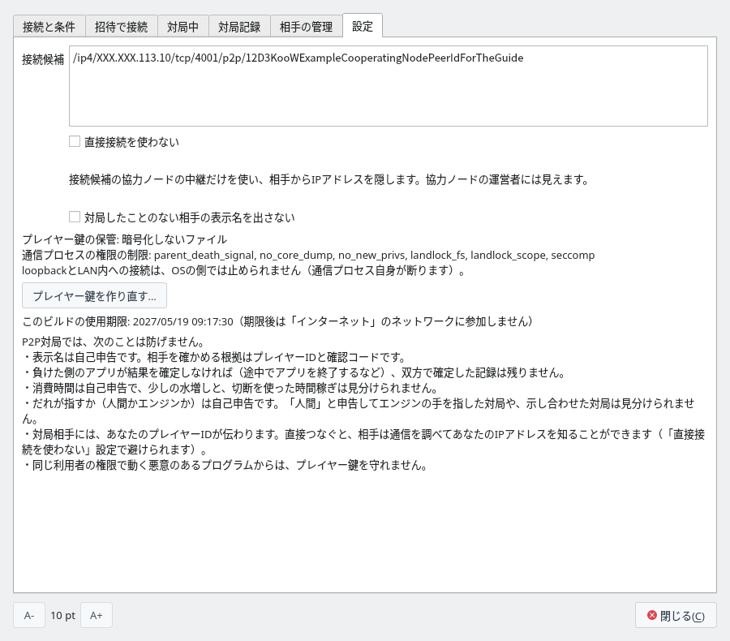
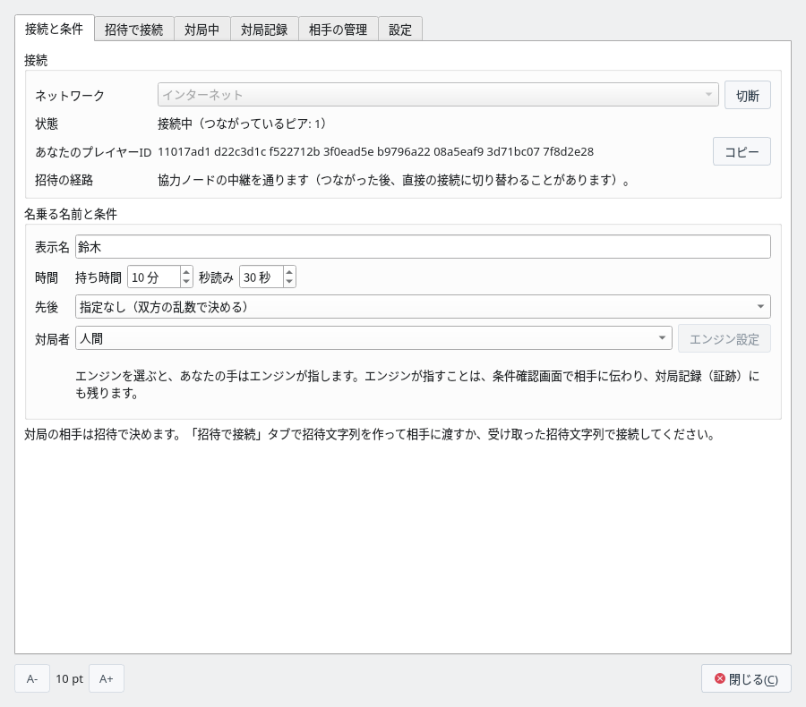
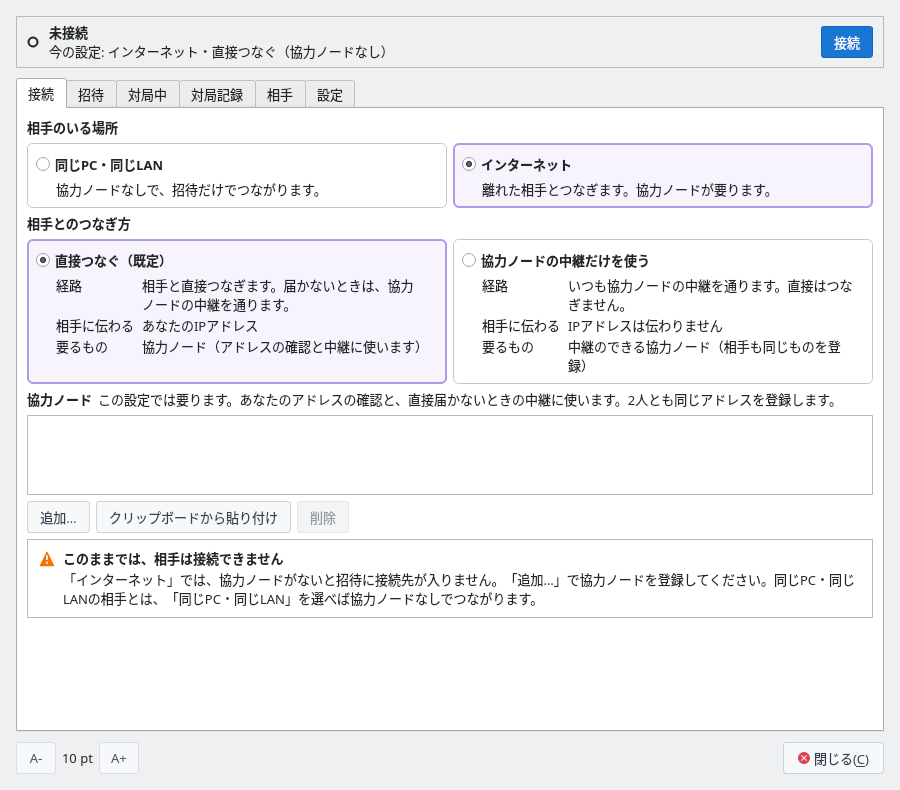
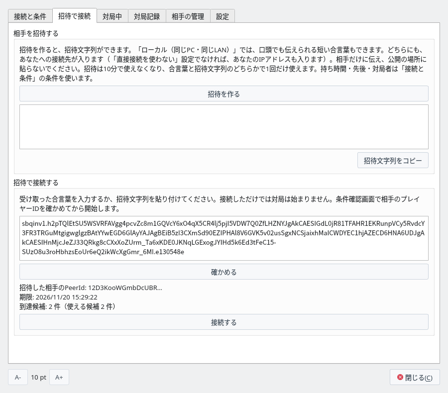
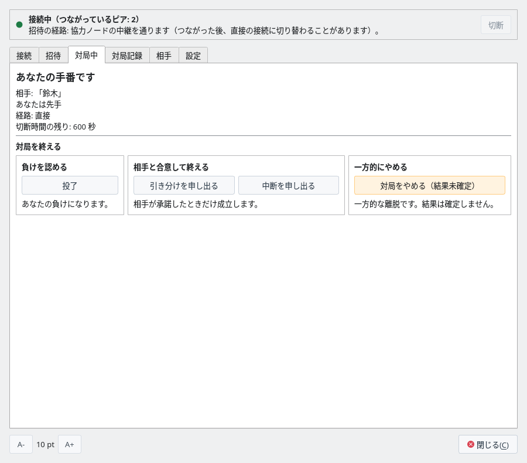
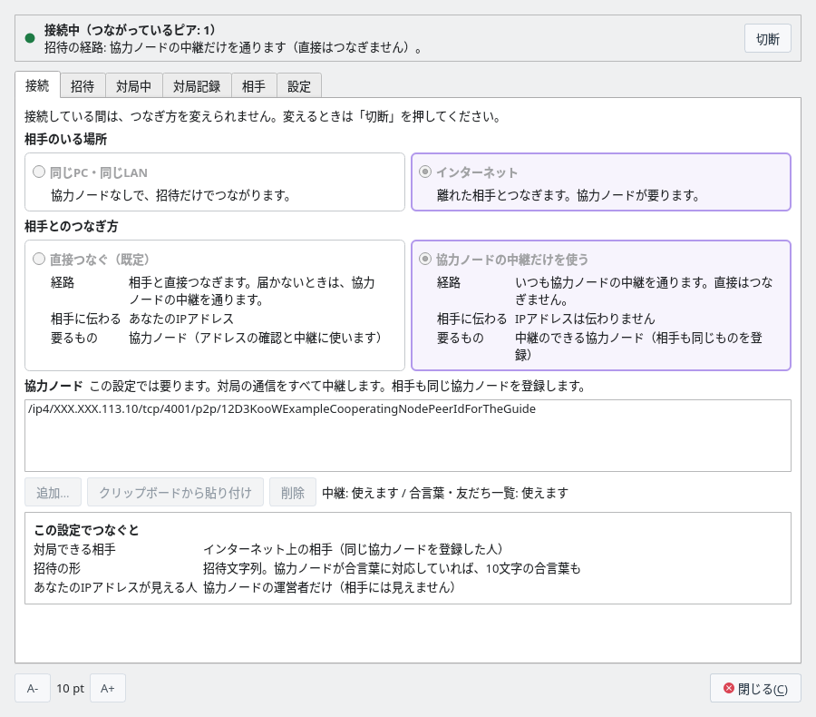
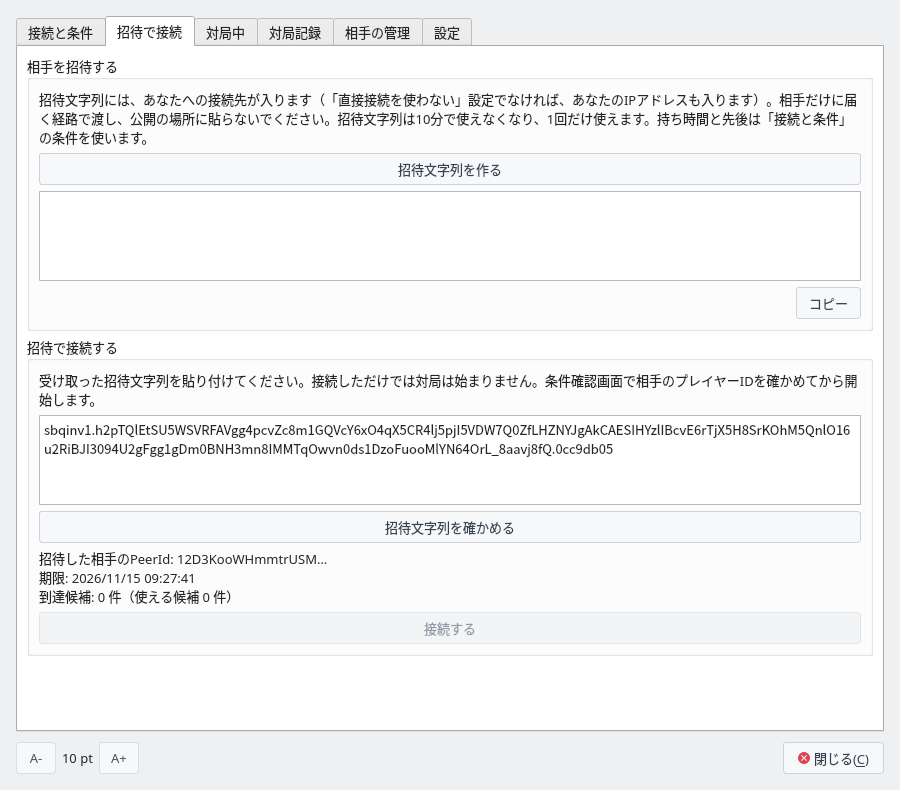
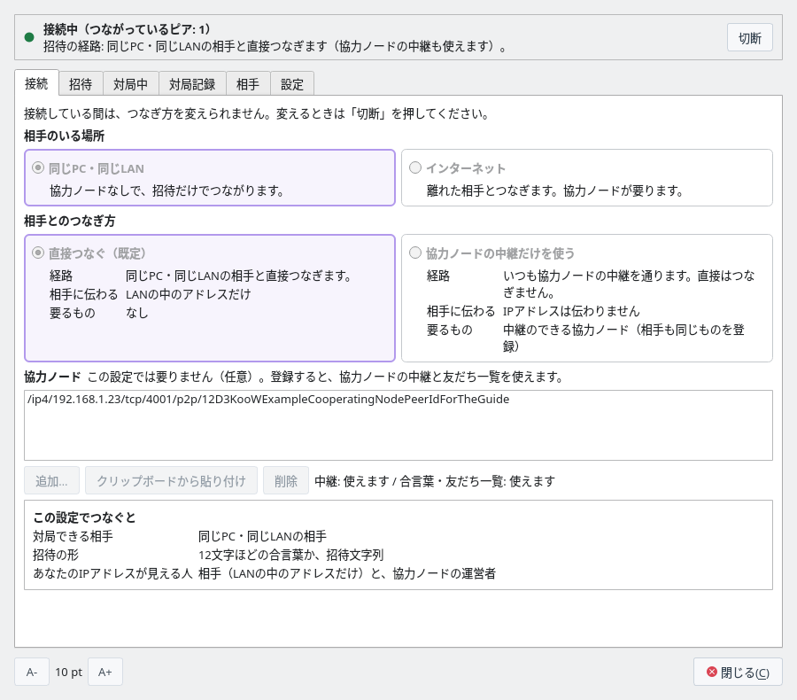

協力ノードを使って対局する
P2P対局で、協力ノードを通して、インターネット上の相手と招待で対局します
P2P対局の準備（プレイヤー鍵・表示名）・画面・対局記録はP2P対局にあります。同じPC・同じLANの相手とは協力ノードなしで対局するをご覧ください。協力ノードをLANの中で試す方法は、LANの中で試すにあります。
協力ノードとは
インターネット越しの対局で、2人のアプリが最初につなぐサーバーです
インターネット越しに対局するには、相手のアプリがあなたのPCへつなぐための宛先を、招待文字列に入れておかなければなりません。ところが、家庭や携帯電話の回線のPCの多くはルーターの内側にあり、PC自身は、インターネットから自分がどのアドレスで見えるかを知りません。外から届いた接続が、ルーターで止まることもあります。P2P対局には、相手を探したり宛先を教え合ったりするサーバーもありません。
そこで、インターネットから届く場所で動いている「協力ノード」に最初につなぎ、次の2つを受け持ってもらいます。
- 到達性の確認：インターネットから見たこのPCのアドレスと、外からそこへ届くかを確かめてもらいます。届くなら、そのアドレスを招待文字列に入れ、相手と直接つなぎます。
- 中継：協力ノードに中継の席を取っておき、協力ノードを経由する宛先も招待文字列に入れます。外から直接届かないとき（家庭の回線の多くはこちらです）は、相手はこの宛先で協力ノードを通ってつながります。
協力ノードを登録せずに「インターネット」で接続すると、招待文字列に宛先が1つも入らず、相手は接続できません。
- すること：到達性の確認と中継です。
--meetを付けて起動した協力ノードは、合言葉の待ち合わせ（暗号化された招待を、10分まで預かること）も受け持ちます。 - しないこと：指し手や勝敗の判定と、対局記録の保存はしません。中継する通信は双方のアプリの間で暗号化しているので、中身（指し手・プレイヤーID・表示名）も読めません。合言葉の待ち合わせで預かる招待も、合言葉から作った鍵で暗号化してあるので、読めません。
- 対局サーバーとの違い：中継を通っていても対局の相手は相手のアプリで、協力ノードはCSA通信対局のサーバーのような役割をしません。違いの表は中継しても協力ノードは対局サーバーにならないをご覧ください。
- 運営者に見えるもの：使う人の IP アドレスと、どの IP アドレスどうしがつないだかです。協力ノードのプログラムは接続元の IP アドレスをログに書きませんが、運営者は通信を調べれば分かります。到達性の確認では、協力ノードから見えたアドレスを1件ずつ確かめてもらうだけで、使う人のLANの中のアドレスは送りません。友だち一覧を使う人については、だれとだれが友だちか（同じ番号を預けた IP アドレスと、引き取った IP アドレスの組）も分かります。
- 止める・遅らせる：協力ノードは中継する通信を止めたり遅らせたりはできますが、中身は書き換えられません（書き換えた通信は暗号の検査で見つかり、アプリが受け付けません）。通信が止まったときは、回線が切れたときと同じ扱いになります（回線が切れたとき）。
だれが協力ノードを起動するか
協力ノードは1つあれば足ります。インターネットから届くサーバーを用意できる人が起動し、アドレスを対局する人に教えます
- 1つで足ります：対局する2人に要る協力ノードは、合わせて1つです。2人がそれぞれ起動する必要はありません。
- 2人とも同じアドレスを登録する：起動した人がアドレスを教え、2人とも「接続」タブの「協力ノード」に登録します。招待する人が登録していないと、招待文字列に接続先が入りません。「協力ノードの中継だけを使う」を選ぶ人は、相手と同じ協力ノードを登録している必要があります。
- いくつもの組で使える：1つの協力ノードを、何組もの対局者で使えます（中継の席は、同時に128人分まで）。
- アプリには入っていない：アプリには協力ノードのアドレスが入っていないので、対局する人たちで用意します。
協力ノードを起動するのは、インターネットから届くサーバーを用意できる人です。対局する2人のどちらかでも、2人の知り合いでもかまいません。
| 起動する人 | 向いている場合 |
|---|---|
| 対局する2人のどちらか | VPS などのサーバーを持っているか、自宅のルーターでポートを開けられるとき |
| 知り合い（対局しない人） | 研究会やサークルで、1人が協力ノードを動かし、メンバーみんなでそのアドレスを使うとき |
起動する人には、次のものが要ります。
- インターネットから届く IP アドレス：グローバル IP アドレスを持つサーバー（VPS など）か、ポートを開けられる自宅の回線です。携帯電話の回線や、プロバイダーがアドレスの変換を重ねている回線（CGNAT）では、外から届かないので動かせません。
- Linux か macOS：協力ノードのプログラムは、自分の権限を制限してから動きます（Linux は Landlock と seccomp、macOS はサンドボックス）。制限を掛けられない環境では動きません。Windows では動かせません。このページの手順は Linux のサーバーの例です。
- 開けられる TCP のポート1つ：このページの例では 4001 番です。
- 動かし続けること：2人が対局する間は止めないでください。中継で指している対局は、協力ノードが止まると切れ、120秒以内につなぎ直せなければ中断（結果未確定）になります。
運営する人には、使う人の IP アドレスが見えます。使う人に、そのことを伝えておいてください。
サーバーを用意する前に、協力ノードの起動と中継を、同じLANの中で試すこともできます（LANの中で試す）。
協力ノードを起動する
P2P対局の通信プロセス shogiboardq-peer を、協力ノードとして動かします
協力ノードは、P2P対局の通信プロセス shogiboardq-peer を --service を付けて起動したものです。P2P対局を有効にしてアプリをビルドすると、アプリと同じフォルダにできます（インストールすると bin に入ります）。
サーバーには Qt も画面も要りません。Rust（1.85 以降）と C コンパイラがあれば、通信プロセスだけをビルドできます。
$ git clone https://github.com/hnakada123/ShogiBoardQ.git
$ cd ShogiBoardQ
$ cargo build --release --locked -p shogiboardq-peer
$ sudo install -m 755 target/release/shogiboardq-peer /usr/local/bin/$ shogiboardq-peer --service --relay --meet --network sbq-limited-1 \
--identity ~/coop-node.key --listen /ip4/0.0.0.0/tcp/4001
shogiboardq-peer: service started as 12D3KooW…| オプション | 意味 |
|---|---|
--service | 協力ノードとして動かします。 |
--relay | 中継を受け持ちます。家庭の回線どうしの対局には、ほとんどの場合要ります。 |
--meet | 合言葉の待ち合わせを受け持ちます。付けると、「インターネット」の招待でも、口頭で伝えられる10文字の合言葉ができます。協力ノードは、暗号化された招待を10分まで預かるだけで、中身は読めません。友だち一覧（在席の知らせ）にも使います。 |
--network sbq-limited-1 | インターネット越しの対局のネットワークです。アプリの「インターネット」は、この名前のネットワークに参加します。アプリの「同じPC・同じLAN」で使う協力ノードは、sbq-local-1 で起動します（LANの中で試す）。 |
--identity <ファイル> | 協力ノードの識別鍵のファイルです。無ければ作ります（持ち主だけが読み書きできる権限）。同じファイルを使い続ければ PeerId は変わりません。消すと PeerId が変わり、アドレスを伝え直すことになります。 |
--listen <アドレス> | 待ち受けるアドレスとポートです。0.0.0.0 は、すべてのネットワークの口で待ちます。ポートは 4001 でなくてもかまいません。 |
起動すると、service started as の後に PeerId が出ます。止めるときは Ctrl+C を押します。起動した後は、つながっているアプリの数（peers=）と、--relay を付けていれば中継している接続の数（relays=）を、数が変わるたびに出します（例: shogiboardq-peer: peers=2 relays=1）。--meet を付けていれば、続けて、預かっている招待の数（meets=）も出します（このページの例では省いています）。relays は人数ではなく、中継でつながっている2人1組につき 1 です。接続元の IP アドレスは出しません。
協力ノードには使用期限はありません（期限で止まるのは、アプリが「インターネット」に参加するときだけです）。
サーバーのファイアウォールで、--listen に書いたポート（TCP の 4001 番）への接続を許可します。VPS では、事業者の管理画面のパケットフィルター（セキュリティグループなど）でも許可します。
# firewalld
$ sudo firewall-cmd --permanent --add-port=4001/tcp
$ sudo firewall-cmd --reload
# ufw
$ sudo ufw allow 4001/tcp自宅のPCで動かすときは、ルーターでそのポートをこのPCへ転送します（ポート開放）。自宅のグローバル IP アドレスが変わると、協力ノードのアドレスも変わります。また、その家の中のPCからこの協力ノードを使うには、ルーターが、自分のグローバル IP アドレスへの折り返しの接続（ヘアピン NAT）に対応している必要があります（「インターネット」では、LANの中のアドレスの協力ノードにはつながないためです）。
協力ノードのアドレスは、次の形です。PeerId は、起動したときに service started as の後に出た文字列です。
/ip4/<サーバーのグローバルIPアドレス>/tcp/4001/p2p/<PeerId>IP アドレスで書きます（ドメイン名は使えません）。このアドレスを、対局する人たちに伝えます。
「インターネット」で使えるのは、インターネット上の IP アドレス（グローバル IP アドレス）だけです。192.168.…・10.…・172.16.…〜172.31.… のようなLANの中のアドレスや 127.0.0.1 を入れても、その行は使われません（画面に知らせは出ません）。LANの中のアドレスで試す方法は、LANの中で試すにあります。
動いているかは、アプリで確かめられます。「接続」タブの「協力ノード」に登録して「インターネット」で接続し、上の帯の「つながっているピア」が 1 以上になり、「招待の経路」に「協力ノードの中継を通ります（…）。」か「直接つなぎます（協力ノードの中継も使えます）。」と出れば、協力ノードと中継を使えています。
サーバーで動かし続けるときは、systemd のサービスにすると、サーバーを再起動したときも自動で起動します。/etc/systemd/system/sbq-coop-node.service を次の内容で作ります（識別鍵は /var/lib/sbq-coop-node に置きます）。
[Unit]
Description=ShogiBoardQ P2P cooperating node
After=network-online.target
Wants=network-online.target
[Service]
DynamicUser=yes
StateDirectory=sbq-coop-node
ExecStart=/usr/local/bin/shogiboardq-peer --service --relay --meet --network sbq-limited-1 \
--identity /var/lib/sbq-coop-node/coop-node.key --listen /ip4/0.0.0.0/tcp/4001
Restart=on-failure
[Install]
WantedBy=multi-user.target$ sudo systemctl enable --now sbq-coop-node
$ journalctl -u sbq-coop-node # PeerId を確かめる対局する2人の準備
2人とも同じ協力ノードを登録して、「インターネット」で接続します
初めてのときは、プレイヤー鍵を作り、表示名を入れます（準備）。
「接続」タブの「相手のいる場所」で「インターネット」を選ぶと、「協力ノード」の欄が出ます。「追加…」を押して、教えてもらった協力ノードのアドレスを入力します（コピーしてあれば、「クリップボードから貼り付け」でも足せます。16件まで）。いくつか登録しておくと、1つが止まっていても、ほかの協力ノードを使えます。協力ノードは、接続している間は変えられません（変えるときは、「切断」を押します）。


「接続」タブ：「インターネット」を選び、協力ノードを登録したところ（アドレスの一部は伏せています）
ウィンドウの上の「接続」を押します。協力ノードにつながり、中継の予約が取れると、上の帯の「招待の経路」に「協力ノードの中継を通ります（つながった後、直接の接続に切り替わることがあります）。」と出ます。予約が取れるまで、少し時間がかかることがあります。「協力ノード」の欄のボタンの横には、中継と、合言葉・友だち一覧を使えるかが出ます。


協力ノードにつながったところ
協力ノードを登録していない間は、「接続」タブの下に「このままでは、相手は接続できません」と出ます。そのまま接続しても、どこにもつながらず（「つながっているピア: 0」）、「招待の経路」に「外から届く接続先がまだありません。…」と出ます。この状態で招待文字列を作っても接続先が入らず、「この招待文字列には接続先が入っていないので、相手は接続できません。…」と出ます。登録したのがLANの中のアドレスだけのときも、接続するとどこにもつながらず、招待文字列に接続先が入りません。このとき「招待の経路」には「協力ノードにまだつながっていません。…」と出ます（LANの中で試す）。


協力ノードを登録していないとき
招待して対局する
招待文字列のやり取りは、協力ノードなしの対局と同じです
招待する人が「招待」タブの「招待を作る」を押すと、招待文字列ができます。協力ノードを --meet を付けて起動していれば、10文字の合言葉（J6HB7-H6NWR の形）も大きな字で出ます。合言葉は口頭や電話で、招待文字列はメッセージなど相手だけに届く方法で伝えます。相手は、合言葉を入力するか招待文字列を貼り付けて、「確かめる」を押します。「到達候補: N 件（使える候補 N 件）」の使える候補が1件以上あれば、「接続する」で接続できます。使える候補が 0 件のときは、「接続する」を押せません（つながらないとき）。その後の条件確認画面と対局は、協力ノードなしの対局と同じです。
この合言葉には、接続先が入っていません。招待は、暗号化して協力ノードに10分まで預けてあり、相手のアプリが合言葉で受け取ります（協力ノードには、中身が読めません）。「同じPC・同じLAN」の合言葉（12文字ほど）とは形が違い、アプリが見分けます。合言葉と招待文字列は同じ1つの招待なので、使えるのはどちらか一方で1回だけです。
招待文字列には、協力ノードを経由する宛先が入ります（外から直接届くPCなら、そのPCの IP アドレスも入ります）。公開の場所に貼らないでください。
「到達候補」は招待文字列に入っている接続先の数（8件まで）で、「使える候補」は、そのうち、あなたのアプリの設定でつなげる接続先の数です。どちらの数も、招待した人のPCと協力ノードのアドレスの数で変わります。
1つの招待文字列でつなげるのは1人・1回だけで、10分で使えなくなります。同時に有効にできるのは4つまでで、指せるのは一度に1局です（詳しくは招待できる人数と回数）。


招待された人：受け取った合言葉を確かめたところ
相手は、まず協力ノードの中継を通ってつながります。つながるとすぐ、双方のアプリが、それぞれのルーターを通り抜けて直接つなげないかを試します（ホールパンチング）。3秒までの間に直接つなげれば、中継の接続を閉じて、条件の確認と対局を直接の接続で行います（「対局中」タブの「経路」は「直接」）。つなげなければ、中継の接続のまま進めます（「経路」は「中継」）。直接つなげるかを確かめる間、招待された人の画面は「接続しています…」のままです。
「経路」が「直接」になる場合も、協力ノードは要ります。外から直接届くPCは、招待文字列に入れるアドレスを確かめるのに協力ノードを使い、そうでないPCは、最初の接続の中継と、直接つなぐための仲立ちに使います。「協力ノードの中継だけを使う」を選んでいなくても同じです。「直接」で指している間は、指し手は協力ノードを通りません。
接続ごとに送り元のポートを変えるルーターや、携帯電話の回線のように何段も変換を重ねる回線では、直接つなげず、「中継」のまま対局します。中継でも対局はできますが、指し手は協力ノードを回って届くので、少し遅れることがあります。ShogiBoardQ の協力ノードは中継1本を30分で切るので、長い対局では途中で自動のつなぎ直し（「再接続中」）が入ることがあります。つなぎ直すときにも、直接つなげないかをもう一度試します。



「経路: 直接」：中継でつながった後、ルーターを通り抜けて直接つなげたとき
このページの画像は、協力ノードと家庭のルーター（NAT）を Docker の中の仮想のネットワークで再現し、2つのアプリで実際に対局して撮りました。「中継」の画像は、接続ごとに送り元のポートを変えるルーターにしたものです。
相手に IP アドレスを見せずに対局する
「協力ノードの中継だけを使う」を選ぶと、相手には協力ノードのアドレスだけが見えます
ふだんは、相手のアプリとあなたのPCが直接つながります（直接つなげないときだけ、協力ノードの中継を使います）。直接つながると、相手は通信を調べれば、あなたのインターネット上の IP アドレスを知ることができます（画面には出しません）。IP アドレスからは、おおよその地域や、使っている回線の会社が分かることがあります。招待文字列にも、あなたの IP アドレスが入ります。
「接続」タブの「相手とのつなぎ方」で「協力ノードの中継だけを使う」を選ぶと、相手とは必ず協力ノードの中継を通してつなぎ、招待文字列にも協力ノードを経由する宛先だけを入れます。相手に見えるのは協力ノードのアドレスだけになり、あなたの IP アドレスが見えるのは、登録した協力ノードの運営者だけになります。インターネット上の、よく知らない相手と指すときに使います。
2つの選択肢の違いは、次のとおりです（画面でも、どちらの枠にも「経路」「相手に伝わる」「要るもの」が出ます）。
| 変わること | 直接つなぐ（既定） | 協力ノードの中継だけを使う |
|---|---|---|
| 招待文字列に入る接続先 | 協力ノードを経由する宛先（外から直接届くPCなら、そのPCの IP アドレスも） | 協力ノードを経由する宛先だけ |
| 相手と直接つなぐこと | 試す | 試さない |
| 対局中の「経路」 | 「直接」（直接つなげなければ「中継」） | ずっと「中継」 |
| あなたの IP アドレス | 相手は知ることができる | 相手には見えない（協力ノードの運営者には見える） |
どちらの場合も、協力ノードは要ります。この設定で変わるのは、協力ノードを使うかどうかではなく、相手と直接つなぐかどうかです。
- 協力ノードが要ります：中継のできる協力ノードを登録してください。登録していないと、「接続」タブに「このままでは、中継を使えません」と出ます。そのまま接続すると、「招待の経路」に「中継を使えません。…」と出て、招待しても相手は接続できません。
- 相手と同じ協力ノード：この設定で、受け取った招待文字列で接続するときは、あなたが登録した協力ノードを通る宛先にしかつなぎません。招待した相手も同じ協力ノードを登録している必要があります（違うと「この招待文字列には、あなたの協力ノードの中継を通る接続先がありません。…」と出ます）。
- ずっと中継：直接の接続を試さないので、対局の間ずっと「経路」は「中継」です。指し手は協力ノードを回って届くので、直接つなぐより少し遅れることがあり、長い対局では途中で自動のつなぎ直し（「再接続中」）が入ることがあります。
つなぎ方は、接続している間は変えられません（「切断」を押してから選びます）。この設定で接続すると、「招待の経路」に「協力ノードの中継だけを通ります（直接はつなぎません）。」と出ます。


「協力ノードの中継だけを使う」で接続したところ
LANの中で試す
サーバーを用意する前に、協力ノードの起動と中継を、同じLANの中で確かめられます
「インターネット」では、アプリはインターネット上のアドレスにしかつなぎません。協力ノードを自分のPCや同じLANのPCで起動し、LANの中のアドレス（/ip4/192.168.10.16/tcp/4001/p2p/… など）を登録しても、その行は使われず、接続すると、協力ノードを登録していないときと同じになります。
- 招待する人：上の帯は「接続中（つながっているピア: 0）」のままで、「招待の経路」に「協力ノードにまだつながっていません。…」と出ます。招待文字列を作ると、「この招待文字列には接続先が入っていないので、相手は接続できません。…」と出ます。
- 招待された人：招待文字列を貼り付けて「確かめる」を押すと「到達候補: 0 件（使える候補 0 件）」と出て、「接続する」を押せません。


招待された人：接続先の入っていない招待文字列を確かめたところ（「接続する」を押せません）
同じLANの相手と対局するだけなら、協力ノードは要りません（協力ノードなしで対局する）。協力ノードの起動、協力ノードの登録、中継を通る対局を、LANの中で試したいときは、次の方法を使います。
協力ノードを --network sbq-local-1 で起動します。ほかのオプションは同じです。
$ shogiboardq-peer --service --relay --meet --network sbq-local-1 \
--identity ~/coop-node.key --listen /ip4/0.0.0.0/tcp/4001登録するアドレスは、協力ノードを動かしているPCの、LANの中の IP アドレスで書きます（同じPCで動かすアプリも、このアドレスで使えます）。識別鍵のファイルが同じなら、PeerId は sbq-limited-1 で起動したときと同じです。
/ip4/<協力ノードのPCのLANの中のIPアドレス>/tcp/4001/p2p/<PeerId>2人とも、「接続」タブの「相手のいる場所」を「同じPC・同じLAN」にし、「協力ノード」の「登録する…」を押して欄を開き、このアドレスを登録して、「接続」を押します。上の帯の「つながっているピア」が 1 になり、「招待の経路」に「同じPC・同じLANの相手と直接つなぎます（協力ノードの中継も使えます）。」と出れば、協力ノードにつながり、中継の予約が取れています。


「同じPC・同じLAN」で、LANの中の協力ノードにつながったところ（アドレスは見本に差し替えています）
協力ノードの --network は、アプリの「相手のいる場所」に合わせます。
| アプリの「相手のいる場所」 | 協力ノードの --network | 登録できるアドレス |
|---|---|---|
| インターネット | sbq-limited-1 | インターネット上のアドレス（グローバル IP アドレス） |
| 同じPC・同じLAN | sbq-local-1 | LANの中のアドレス（192.168.… など） |
合っていないと、中継を使えません。sbq-limited-1 のままの協力ノードに「同じPC・同じLAN」でつなぐと、「つながっているピア」は 1 になりますが、中継の予約が取れず、「招待の経路」は「同じPC・同じLANの相手と直接つなぎます。」のままです。
協力ノードを動かすPCのファイアウォールでは、--listen に書いたポート（TCP の 4001 番）への接続を許可します（ポートを開ける）。対局する人のPCのポートは、同じLANの別のPCと対局するをご覧ください。
このまま招待すると、招待文字列にLANの中のアドレスが入り、相手とは直接つながります（「対局中」タブの「経路」は「直接」）。協力ノードの中継は使われません。協力ノードが無いときと同じで、ここまでで確かめられるのは、協力ノードにつながって中継の予約が取れることまでです。
中継を通る対局を試すには、2人のどちらか（2人ともでもかまいません）が、「切断」を押してから、「接続」タブの「相手とのつなぎ方」で「協力ノードの中継だけを使う」を選び、接続し直します。だれも選ばなければ「経路」は「直接」、1人でも選べば「中継」になります。
- 選んだ人の「招待の経路」に「協力ノードの中継だけを通ります（直接はつなぎません）。」と出ます。
- 選んだ人が作る招待文字列には、協力ノードを経由する宛先だけが入ります。
- 選んだ人が、受け取った招待文字列を確かめると、使えるのは協力ノードを経由する宛先だけになります（招待した人が選んでいなければ、「到達候補: N 件（使える候補 M 件）」の使える候補が、到達候補より少なくなります）。
- 「接続する」で接続して対局を始めると、2人とも「対局中」タブの「経路」が「中継」になります。
到達候補と使える候補の数は、PCによって変わります。「同じPC・同じLAN」の招待文字列には、招待した人のPCのLANの中のアドレス（ネットワークの口ごとに、UDP と TCP で1つずつ。回線のつながっていない Docker などの仮想の口は、Linux では入りません。LANの中のアドレスが1つもなければ、代わりに同じPCの中だけで使えるアドレス）と、協力ノードを経由する宛先（協力ノードを 0.0.0.0 で待ち受けさせたときは、協力ノードのPCのアドレスごとに1つ）が、この順に8件まで入ります。「協力ノードの中継だけを使う」を選んだ人が使えるのは、このうち協力ノードを経由する宛先だけです。
LANの中で確かめられるのは、協力ノードの起動、協力ノードの登録、中継を通る招待と対局です。到達性の確認、ルーターを通り抜けて直接つなぐ動き（ホールパンチング）、使用期限は「インターネット」だけのものなので、LANの中では試せません。インターネット越しの対局に使うときは、協力ノードを --network sbq-limited-1 で起動し直し、アプリの「相手のいる場所」を「インターネット」に戻します。
つながらないとき・使用期限
画面に出る文から、確かめることが分かります
| 出る文・状態 | 確かめること |
|---|---|
| 「つながっているピア: 0」のまま | 登録した協力ノードのアドレスの誤り、協力ノードが止まっている、サーバーのファイアウォールが閉じている、のどれかです。アドレスは IP アドレスで書きます（ドメイン名は使えません）。「インターネット」では、LANの中のアドレス（192.168.… など）を登録した行は使われません（LANの中で試す）。 |
| 「招待の経路」に「外から届く接続先がまだありません。…」 | 協力ノードを登録していません。「接続」タブの「追加…」で登録します。 |
| 「招待の経路」に「協力ノードにまだつながっていません。…」 | 登録した協力ノードに、まだつながっていません。少し待っても変わらなければ、上の「つながっているピア: 0」の行を確かめます。 |
| 「招待の経路」に「外から届く接続先を、協力ノードで確かめています。…」か「協力ノードに中継を予約しています。…」 | 協力ノードにはつながりましたが、中継の予約がまだ取れていません。少し待っても変わらなければ、協力ノードを --relay を付けて起動しているかと、--network がアプリの「相手のいる場所」に合っているか（LANの中で試すの対応表）を確かめます。 |
| 招待文字列を確かめると「到達候補: 0 件（使える候補 0 件）」と出て、「接続する」を押せない | 招待文字列に接続先が入っていません。招待した人のアプリが、協力ノードにつながっていないか、中継の予約がまだ取れていないうちに作った招待文字列です。招待した人に、「招待の経路」が上の3つの行の文のどれかのままでないかを確かめてもらい、「協力ノードの中継を通ります（…）。」などに変わってから、招待文字列を作り直してもらいます。 |
| 「招待の経路」に「中継を使えません。…」 | 「協力ノードの中継だけを使う」を選んでいて、協力ノードを登録していません。「接続」タブで、中継のできる協力ノードを登録します。 |
| 「インターネット」で招待を作っても、合言葉が出ない（「この招待には合言葉が付きません…」と出る） | 協力ノードを --meet を付けて起動していないか、協力ノードにまだつながっていません。合言葉が出なくても、招待文字列は使えます。 |
| 「この合言葉の招待は、協力ノードから受け取ります。…」 | 合言葉を入力した人のアプリが、合言葉に対応した協力ノードにつながっていません。招待した人と同じ協力ノードを「接続」タブで登録して、接続し直します。 |
| 「この合言葉の招待が見つかりません。…」 | 合言葉が違うか、期限（10分）が過ぎたか、もう使われています。招待した人に、新しい招待を作ってもらいます。 |
| 「この招待文字列には、あなたの協力ノードの中継を通る接続先がありません。…」 | 「協力ノードの中継だけを使う」を選んでいて、招待した人と協力ノードが違います。同じ協力ノードを登録します。 |
| 「別のネットワークの招待文字列です。」 | 2人の「相手のいる場所」が違います。2人とも「インターネット」で接続します（LANの中で試すときは、2人とも「同じPC・同じLAN」）。 |
| 「同じPC・同じLAN」で、「招待の経路」に「（協力ノードの中継も使えます）」が出ない | 協力ノードを --network sbq-local-1 と --relay を付けて起動しているか、登録したアドレスがLANの中のアドレスかを確かめます（LANの中で試す）。 |
| 「このビルドは使用期限を過ぎたので、…」 | 使用期限を過ぎたビルドです（下の2）。 |
「インターネット」に参加できるのは、アプリをビルドした日から180日までです（「設定」タブの「このビルドの使用期限」に出ます）。P2P対局には古い版を止めるサーバーがないので、不具合や安全上の欠陥が直っていない古い版がネットワークに残り続けないようにしています。期限を過ぎたら、新しい版に更新してください（ソースからビルドしている場合は、ビルドし直します）。
期限があるのは、アプリの「インターネット」だけです。協力ノードと、「同じPC・同じLAN」の対局、保存した記録の確認・検証には、期限はありません。
よくある質問
協力ノードを使うときに出てくる疑問と、その答えです
できます。協力ノードを --meet を付けて起動していれば、「招待を作る」で、招待文字列と一緒に10文字の合言葉が出ます（招待して対局する）。協力ノードは、暗号化された招待を10分まで預かるだけで、中身（接続先）は読めません。合言葉から鍵を作るのに時間のかかる計算を使っているので、預かったものから合言葉を割り出すことも、現実的にはできません。--meet を付けていない協力ノードでは、合言葉は出ず、招待文字列だけになります。
招待文字列に接続先が入っていないときに起こります（招待された人の画面に「到達候補: 0 件（使える候補 0 件）」と出ます）。「インターネット」では、LANの中のアドレス（192.168.… など）の協力ノードは使われないので、招待文字列に接続先が入りません。協力ノードをLANの中で試すときは、協力ノードを --network sbq-local-1 で起動し、アプリの「相手のいる場所」を「同じPC・同じLAN」にします（LANの中で試す）。ほかの原因は、つながらないときをご覧ください。
--network に書く sbq-limited-1 と sbq-local-1 は何ですか
アプリの「相手のいる場所」に対応する、ネットワークの名前です。「インターネット」が sbq-limited-1、「同じPC・同じLAN」が sbq-local-1 です。協力ノードは、使うアプリの「相手のいる場所」に合わせて起動します。合っていないと、つながっても中継を使えません（LANの中で試すの対応表）。
「到達候補」は招待文字列に入っている接続先の数（8件まで）で、「使える候補」は、そのうち、あなたのアプリの設定でつなげる接続先の数です。招待した人のPCのネットワークの口の数と、協力ノードのアドレスの数で変わるので、PCによって違います。「協力ノードの中継だけを使う」を選んだ人が使えるのは、協力ノードを経由する宛先だけなので、使える候補が少なくなります（LANの中で試すの3）。
「インターネット」では要ります。協力ノードが無いと、招待文字列に入れる接続先ができません。家庭の回線のPCどうしは、まず協力ノードの中継でつながり、直接つなげれば、直接の接続で対局します（経路：中継と直接）。「同じPC・同じLAN」では、協力ノードが無くても同じように直接つながるので、要りません（協力ノードなしで対局する）。
中継を通る対局を試したいなら、2人のどちらかが選びます。選ばなければ直接つながり、協力ノードは対局に使われません。協力ノードにつながって中継の予約が取れることだけを確かめるなら、選ばなくてかまいません（LANの中で試すの3）。
通っています。協力ノードは、つながっているアプリの数（peers=）と、中継している接続の数（relays=）を、数が変わるたびに出力します（例: shogiboardq-peer: peers=2 relays=1）。対局のデータが協力ノードを通っている間は、relays が 1 以上になります。中継した量と、接続元の IP アドレスは出力しません。相手と直接つながっている対局と、中継を通っている対局の違いは、次のとおりです。
| 比べること | 相手と直接つながっている対局 | 中継を通っている対局 |
|---|---|---|
| そうなるとき | 相手のPCへ直接つなげたとき（「同じPC・同じLAN」の対局、ルーターを通り抜けて直接つなげたインターネット越しの対局） | 直接つなげなかったとき、「協力ノードの中継だけを使う」を選んだとき |
| 指し手の通り道 | あなたのアプリ ⇄ 相手のアプリ | あなたのアプリ → 協力ノード → 相手のアプリ |
| 協力ノードの通信量 | 接続を保つ分だけで、指しても増えない | 指すたびに、片方から受け取った量とほぼ同じ量を、もう片方へ送る |
| 協力ノードの出力 | peers=2 relays=0 | peers=2 relays=1 |
| 対局中に協力ノードを止めると | 対局の接続は切れない | 対局の接続が切れる（120秒以内につなぎ直せなければ中断） |
どちらで指しているかは、アプリの「対局中」タブの「経路」と、協力ノードの出力の relays で分かります。協力ノードを動かしているPC（Linux）では、次のコマンドで、協力ノードの接続ごとの通信量を見られます（bytes_received が受け取った量、bytes_sent が送った量）。4001 は --listen に書いたポートです。
$ ss -tin 'sport = :4001'中継を通っていれば、1手指すたびに、片方の接続の bytes_received と、もう片方の接続の bytes_sent が同じくらい増えます。直接つながっていれば、指しても増えません。片方からもう片方へ約31KBのデータを送って試したところ、協力ノードが受け取った量は、直接つながっているときで124バイト、中継を通っているときで約35KBでした（暗号化と中継の包みの分、送った量より1割ほど多くなります）。
中継していても、協力ノードは中身（指し手・プレイヤーID・表示名）を読めません（協力ノードがすること・しないこと）。
relays=1 です。relays=2 ではないのですか
relays=1 で合っています。relays は対局している人数ではなく、協力ノードが中継している接続の本数です。2人の対局では、招待された人のアプリが協力ノードを通って相手へつなぐ接続が1本だけでき、指し手は両方向とも、その1本を流れます。人数は peers（協力ノードにつながっているアプリの数）に出ます。
| 場面 | 協力ノードの出力 |
|---|---|
| 2人が協力ノードにつながっているだけで、対局していない | peers=2 relays=0 |
| 2人が中継を通って1局指している | peers=2 relays=1 |
| 4人が中継を通って2局指している | peers=4 relays=2 |
切断されます。ShogiBoardQ を終了すると、P2P対局の通信を受け持つ通信プロセス（shogiboardq-peer）も一緒に終わり、協力ノードと相手との接続はすべて閉じます。協力ノードの出力では、peers がその分だけ減ります。アプリが異常終了したときも、通信プロセスだけが残って通信を続けることはありません。
- 対局中に終了したとき：対局は中断（結果未確定）になります。条件の確認の途中なら、取りやめになります。
- P2P対局のウィンドウを閉じただけのとき：接続と対局は続きます。接続を切るには、ウィンドウの上の「切断」を押すか、ShogiBoardQ を終了します（ウィンドウのタブ）。
- 協力ノード：ターミナルで起動した協力ノード（
shogiboardq-peer --service …）は別のプロセスなので、ShogiBoardQ を終了しても動き続けます。止めるときは Ctrl+C を押します。